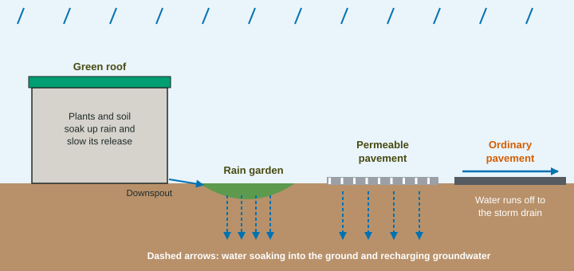

Methods to Reduce Urban Runoff
Methods to reduce urban runoff let rain soak in or be held near where it falls: permeable pavement, rain gardens, green roofs, rain barrels, trees and parks, and building upward and with transit so less land is paved.
Part 1 · Hook
Why this matters
Part 2 · Before you start
What this builds on
Part 3 · Prerequisite check
Quick check before you start
1. Why does a paved watershed flood faster than a forested one?
- Impervious surfaces stop infiltration, so runoff reaches the stream at once
- Pavement makes more rain fall
- Pavement stores water and releases it slowly
- Forests send more water to streams during storms
Show the answer
Water that cannot soak in runs off fast.
- Correct: Impervious surfaces stop infiltration, so runoff reaches the stream at once:
- Pavement makes more rain fall:
- Pavement stores water and releases it slowly:
- Forests send more water to streams during storms:
2. What is infiltration?
- Water soaking into the soil
- Water evaporating from a lake
- Water flowing over pavement
- Water vapor forming clouds
Show the answer
Infiltration is the movement of water into the ground.
- Correct: Water soaking into the soil:
- Water evaporating from a lake:
- Water flowing over pavement:
- Water vapor forming clouds:
Part 4 · See it
See it first

Part 5 · Step by step
How it works, step by step
- Rain falls on a green roof, rain garden or permeable pavementit is held in soil and plants or passes into the ground
- Water soaks in or is released slowlyless runoff reaches storm drains during the storm
- Less runoff, spread over more timeflood peaks downstream are lower and storm sewers overflow less
- Water filters through soil and recharges groundwatersediment and some pollutants are trapped, and streams keep flowing between storms
Part 6 · Key ideas
Key ideas
- The goal is to let rain soak in, or be stored and released slowly, near where it falls, instead of piping it straight to streams.
- Permeable pavement lets water through gaps or pores into gravel and soil. It must be swept or vacuumed so it does not clog.
- Rain gardens and planted swales collect runoff in low spots where plants and soil soak it up and trap sediment. Green roofs hold rain in soil and plants and cool buildings.
- Other methods: rain barrels and cisterns, more trees and parks, building vertically to cover less ground, and public transit so fewer roads and parking lots are needed.
Part 7 · Misconception
A common mistake
The wrong idea: The best fix for urban flooding is bigger storm drains.
What actually happens: Bigger pipes move water faster, which can make floods downstream worse and does nothing to recharge groundwater. Letting rain soak in where it falls lowers the flood peak and recharges groundwater.
Part 8 · Check yourself
Check yourself
Exam-style questions. Anything you miss goes into your review queue.
1. What is a rain garden?
- A planted low spot that soaks up runoff
- A greenhouse where the plants are watered with rain
- A roof covered with soil and plants
- A tank that stores rain for watering lawns
Show the answer
A rain garden is a shallow, planted basin that takes runoff from roofs or pavement.
- Correct: A planted low spot that soaks up runoff: Right: a planted basin that soaks up runoff.
- A greenhouse where the plants are watered with rain: A greenhouse is not a runoff control.
- A roof covered with soil and plants: That is a green roof.
- A tank that stores rain for watering lawns: That is a rain barrel or cistern.
2. How does permeable pavement reduce flooding?
- Rain passes through into gravel and soil, so less runs off
- It is darker, so rain evaporates from it before it can run off
- It slopes toward the storm drains, so water leaves faster
- It is smoother, so water flows off it more quickly
Show the answer
Water drains through the pavement into the ground instead of running across it.
- Correct: Rain passes through into gravel and soil, so less runs off: Right: water passes through and soaks in.
- It is darker, so rain evaporates from it before it can run off: Evaporation is not how it works.
- It slopes toward the storm drains, so water leaves faster: Sending water to drains faster is ordinary pavement.
- It is smoother, so water flows off it more quickly: Faster runoff makes flooding worse.
Model or diagram
Three ways to reduce urban runoff
3. In the diagram, where does the water from the downspout go?
- Into the rain garden, where it soaks in
- Onto the ordinary pavement and into the storm drain
- Back up onto the green roof to water the plants
- Through the permeable pavement into the gravel
Show the answer
The downspout arrow points into the rain garden, and dashed arrows show water soaking in.
- Correct: Into the rain garden, where it soaks in: Right: into the rain garden.
- Onto the ordinary pavement and into the storm drain: The storm drain gets water from the ordinary pavement.
- Back up onto the green roof to water the plants: Water does not flow back up to the roof.
- Through the permeable pavement into the gravel: The permeable pavement is next to the garden, but the downspout feeds the garden.
4. What do the three methods in the diagram have in common that ordinary pavement lacks?
- Each lets water soak in or holds it for a while
- Each sends water sideways to the storm drain more quickly
- Each is darker than ordinary pavement, so rain dries faster
- Each collects water in tanks to be pumped back to the river
Show the answer
Dashed arrows show water soaking into the ground beneath each method; ordinary pavement sends it sideways to the drain.
- Correct: Each lets water soak in or holds it for a while: Right: water soaks in or is held.
- Each sends water sideways to the storm drain more quickly: That describes ordinary pavement.
- Each is darker than ordinary pavement, so rain dries faster: Color is not the point of these methods.
- Each collects water in tanks to be pumped back to the river: No tanks or pumps are shown.
5. A neighborhood above a river installs all three methods. Which change in the river is most likely?
- Lower flood peaks and steadier flow between storms
- Higher, faster flood peaks after storms and less flow between storms
- No change in flood peaks, but warmer water after storms
- More sediment and oil carried into the river by each storm
Show the answer
Less runoff lowers flood peaks; more recharge feeds the river between storms.
- Correct: Lower flood peaks and steadier flow between storms: Right: lower peaks, steadier base flow.
- Higher, faster flood peaks after storms and less flow between storms: That is the effect of paving, not of these methods.
- No change in flood peaks, but warmer water after storms: Less runoff lowers peaks.
- More sediment and oil carried into the river by each storm: Soil and plants trap sediment and oil.
Data
Runoff from four parking lot designs
| Parking lot surface | Runoff (m³) | Cost to build (dollars per m²) |
|---|---|---|
| Ordinary asphalt | 27 | 40 |
| Ordinary asphalt draining to a rain garden | 12 | 55 |
| Permeable pavers | 6 | 90 |
| Porous asphalt | 9 | 70 |
6. Write the setup for the percent change in runoff from the ordinary asphalt lot to the permeable paver lot, then give the answer.
Type the setup as on the exam, with brackets and units, then the answer.
Show the answer
- Setup: ; answer -77.8 %
7. A roof measures 120 m². How many liters of water fall on it in a 15-mm rain? (1 m³ = 1,000 L)
Type a number, then its unit (L). Scale words (2.5 million) and powers of ten (2.5 × 10^6) are read.
Show the answer
, and
- Answer: 1800 L
Part 9 · Summary
Summary
Part 10 · Up next
What comes next
Part 11 · Connections